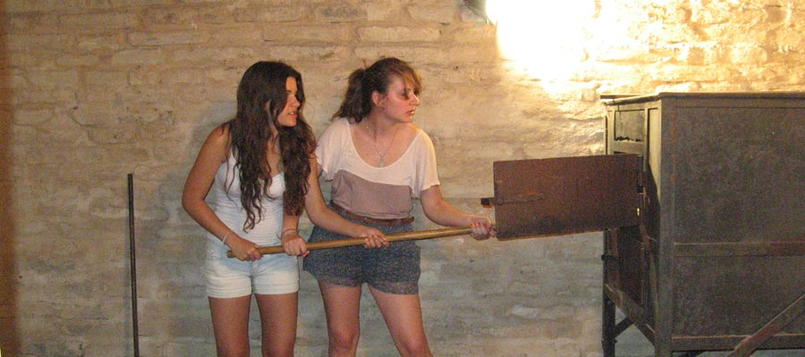

Historisches Handwerk
Kalkmauerwerk, Lehm, Zimmerei, Dach, Verputz, Möbelrestaurierung und Gartenarbeit.

Lernen durch Mitmachen
Handwerk, Traditionen und gemeinsame Erlebnisse.
Kalkmauerwerk, Lehm, Zimmerei, Dach, Verputz, Möbelrestaurierung und Gartenarbeit.
Ostereier, Flammkuchen aus dem Holzofen, regionales Handwerk und jahreszeitliche Feste.
Straßburg, Schwarzwald, Burgen, Weinberge, Museen und Thermalbäder.
Die örtlichen Freiwilligen treffen sich außerhalb der Schulferien mittwochs und donnerstags nachmittags.